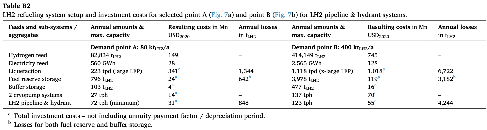
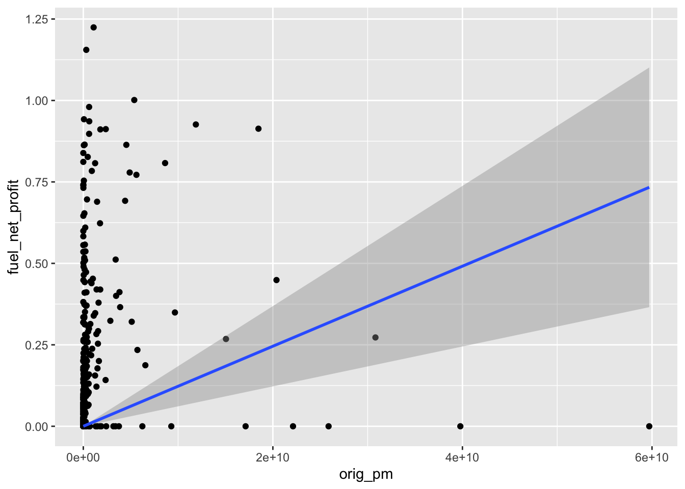

# Remove all elements from memory
# and load tidyverse packages
rm(list = ls())
library(tidyverse)
library(ggthemes)
# Load flight data and financial data
airport_pm <- read_csv("../data/airports/airport_pm.csv")
fin <- read_csv("../data/airports/airport_financials.csv")Calibrate Aeronautical Benefits
Each airport decides to adopt hydrogen infrastructure based on its relative costs and benefits. The benefits are in terms of the operating profits (if any) from providing hydrogen services and the costs are the purchase, investment, and installation costs.
Installation Costs
The airport faces a specific capital expenditure in order to install the liquid hydrogen infrastructure. The expenditure is assumed to involve both fixed variable costs based on the airport’s size. Letting \(Q_i\) be the size of airport \(i\) in passenger-miles we would have a total cost function of
\[ C(Q_i) = X + c \eta \nu Q_i \]
Where \(c\) is the marginal cost in dollars of each additional metric kiloton of LH2 supply capacity desired. The coefficient \(\nu\) is the fraction of the airport’s size/capacity \(Q_i\) that airports anticipate needing to meet with hydrogen fueling services. For example, if \(\nu = 0.5\) then it would signal that airports installing hydrogen infrastructure today, would expect that in the future they’ll want to be able to service at least 50% of their capacity in hydrogen aircraft. This is assumed a fixed parameter across all airports. The parameter \(\eta\) is a conversion coefficient giving the average kilotons of LH2 per passenger-mile so that the cost function can be in terms of passenger miles instead of kilotons of LH2.
The values of these parameters are difficult to calibrate, as no existing infrastructure exists to generate data for estimation purposes. Instead, we will need to rely on research. A few papers cover the expected costs of installing liquid hydrogen refueling infrastructure. Particularly useful are the papers,
“Hydrogen-powered aviation and its reliance on green hydrogen infrastructure - Review and research gaps” (J. Hoelzen et al, 2022), and
H2-powered aviation at airports - Design and economics of LH2 refueling systems (J. Hoelzen, et al 2022).
The last paper provides two useful ways to represent infrastructure costs. Currently, the model involves the present value (required upfront today costs) of capital expenditures (approach 1). These costs are compared to the present value of the future stream of operating benefits. A second approach is to model all costs as distributed (amortized) into the future using annuity payments and an appropriate interest rate. Both approaches should be considered, and the paper provides a useful way to get a general stab at each of these.
Approach 1
The tables shown below are from the paper and detail out some hypothetical costs for airports of different sizes in present value terms. The first table details costs for refueling trucks and the second for pipelines. Several times in the paper the costs for larger airports coincide quite closely.

In each of the tables the authors detail a cost (in million USD) for each of the primary components of an LH2 refueling setup for an airport demanding 80 kt of LH2 annually and a large airport demanding 400 kt of LH2 per year. A (over?) simplified approach to convert this into our needed function would be to use the two pairs of costs and quantities to form a line. Using the equation of a line we can calculate a curve (see /data/Investment_Calibration.xlsx)
\[ CEX = 173.75 + 2.7031 kt_{LH2} \]
This would give us an intercept (fixed minimum cost of ) 173.75 million dollars, plus 2.7031 million per kiloton of LH2 annual capacity. We would then set \(c = 2.7031\) and we are left with calculating value of \(\eta\) and \(\nu\). Airport usage of fuel is hard to determine per airport, as the data is not apparently easy to find. It might be inferred from the number of flights, enplanements, available seat-miles, or revenue passenger-miles. Based on available data, fuel usage by all airports together by month was determined and these aggregate monthly fuel usages could be divided by the aggregate monthly revenue passenger-miles. The resulting 12 fuel usage to passenger-miles ratios can be averaged to arrive at an overall average relationship between the amount of fuel used and to produce the revenue passenger-miles. This rate can then be used as an estimate of \(\eta\) which tells the average kilotons of LH2 per revenue passenger-mile and will allow the conversion of passenger-mile units of airport size/capacity to millions of USD in the cost function.
Approach 1 has the advantage of being quick, relatively simple, and does not require remodeling the airports decision in the mathematical model. But it has limitations in that it may be an oversimplified relationship (linear instead of nonlinear) and may not include all costs involved in hydrogen adoption and operation.
Approach 2
Approach two will require a remodeling of the airport’s decision. In this approach, our goal be to essentially model all infrastructure investment cost as being ‘financed’ in the sense that the airport borrows all the funds and just makes annual payments on the principle and interest. This allows annual costs in a year to be compared with annual benefits in a year and so that we compare apples-to-apples in each year’s period. However, a net present value style analysis may still be appropriate for these future streams of benefits and costs.
This approach may be valuable because of research efforts in the papers discussed. This research uses the investment, operating, and maintenance costs to develop an average total cost function. Consider the tables below.

The tables can be used to infer and calibrate a total cost function for installation. The outcome of the tables is a measure of costs in terms of USD per kilogram of LH2 for a chosen level of LH2 annual capacity in metric tons of LH2. Cost curves for both refueling trucks and pipelines are projected for different scenarios and sizes of airports. The curves seen in the graphs can be distilled into a useful cost function as follows. First, we note that the cost curves indicated a monotonic non-increasing average total cost. The curve is nonlinear and we would need the cost curve to go through some of the key highlighted portions of the graph.
In economics the total cost function \(TC(Q)\) yields the total production costs required to produce \(q\) units of output. In this case, \(Q\) is the chosen capacity (in tons of LH2) of the airport’s hydrogen infrastructure. The average total cost if measured simply as \(ATC(Q) = TC(Q)/Q\). By assuming the above graphs are a suitable average total cost we can recover the total cost function simply by multiplying by \(Q\).
Given the y-intercept in the graph, we might specify the following equation.
\[ ATC = \frac{a}{1 + bQ} \]
where we could set \(a = 4.2\) for the highest cost curve in the second graph as the anticipated cost per kilogram of LH2 for capacities near 0. Then we can use the example points in the graph to calibrate the value of \(b\).
| Point | X | Y |
|---|---|---|
| SP2 | 20,000 | 3.6 |
| SP1 | ~55,000 | ~3.1 |
| SP0 | 125,000 | 2.8 |
Use the X,Y combinations in the table to find the best fitting value of \(b\) to go through as close to those points as possible (solve the system or use least-squares approximation). With the resulting \(\hat{b}\) we could then compute the total cost function as below.
\[ TC(Q) = \frac{4.2 Q}{1 + bQ} \]
Operating Revenue and Costs
The airport’s decision to invest in LH2 infrastructure in the model comes from balancing the present value of future net operating benefits gained from adopting to the upfront cost of adopting. The present value of the operating benefits are given below.
\[ \frac{F_{H,Rev} - F_{H,Exp}}{\delta - \gamma} \cdot \alpha (S) \cdot S \cdot Q_i \]
Where \(F_{H,Rev}\) and \(F_{H,Exp}\) are the operating revenue and expenses respectively for hydrogen services. These values are unknown as no such hydrogen operations have been conducted at scale. Instead of estimating these directly, we can make them relative to the price of kerosene jet fuel. Multiplying the revenues and expenses by 1 in the respective forms \(F_{K,Rev}/F_{K,Rev}\) and \(F_{K,Exp}/F_{K,Exp}\) we can put the hydrogen net benefit expression in relative terms to conventional jet fuels.
\[ \begin{align} &= \frac{\frac{F_{H,Rev}}{F_{K,rev}}F_{K,Rev} - \frac{F_{H,Exp}}{F_{K,Exp}}F_{K,Exp}}{\delta - \gamma} \cdot \alpha(S) \cdot S \cdot Q_i \\ &= \frac{\tilde{F}_{H,Rev} \cdot F_{K,Rev} - \tilde{F}_{H,Exp}\cdot F_{K,Exp}}{\delta - \gamma} \cdot \alpha(S) \cdot S \cdot Q_i \end{align} \]
In the above expression we now characterize the LH2 operating revenue and expenses as multiples of the operating revenue and expenses of jet fuel. For example, if \(\tilde{F}_{H,Rev}\) were set to 1, then the operating revenues per passenger-mile would be equivalent to that of jet fuel. If instead the value were 0.9, then it would signal operating revenues for LH2 that are 90% of the operating revenue per passenger mile for jet fuel. Similarly, if \(\tilde{F}_{H,Exp} = 1.3\), then it would signify LH2 operating expenses that are 30% higher than the operating expenses per passenger-mile for jet fuel.
Operating Revenue and Cost Calibration with Data
Using the dataset of airport financials (optionally self-reported by US airports through government forms) we can attempt some calibrations.
The financial data does includes several columns related to aeronautical service revenue, terminal fees, etc. These are important measures and are more fitting to specific modeling task. However, the model compares net operating benefits, which means operating costs must be included. Unfortunately, the operating costs in the data are not broken down by aeronautical services. This matters because LH2 based flight is likely to cost more, not just because of fuel, but because of other operating costs and facts associated with this type of fuel. For example, hydrogen loss, and longer refueling times. To stick with an operating revenue and expense on the same “level” we’ll attempt to calibrate using total operating revenues and costs. But it should be noted this may include other factors that may not be as directly relevant to airport’s adoption decision. We can also look at just the fuel sales net profits.
fin %>%
mutate(operating_profit = `Total Operating Revenue` - `Total Operating Expenses`) %>%
select(LOC_ID, `Total Operating Revenue`, `Total Operating Expenses`, operating_profit, `Fuel sales net profit/loss or fuel flowage fees`) %>%
rename(tot_oper_rev = `Total Operating Revenue`) %>%
rename(tot_oper_exp = `Total Operating Expenses`) %>%
rename(fuel_net_profit = `Fuel sales net profit/loss or fuel flowage fees`) -> fin_redWith the reduced data set we can now join it with calculated passenger miles per airport and convert revenue and cost figures from USD to millions of USD.
airport_pm %>% left_join(fin_red, by = join_by(AIRPORT == LOC_ID)) %>%
filter(!is.na(operating_profit)) %>%
mutate(tot_oper_rev = tot_oper_rev/1000000) %>%
mutate(tot_oper_exp = tot_oper_exp/1000000) %>%
mutate(fuel_net_profit = fuel_net_profit/1000000) %>%
mutate(operating_profit = operating_profit/1000000) %>%
mutate(fuel_profit_pm = fuel_net_profit/(orig_pm/1000000)) -> joined_df
summary(joined_df) airport_id AIRPORT orig_pm tot_oper_rev
Min. :10011 Length:436 Min. :1.730e+02 Min. : 0.0000
1st Qu.:11282 Class :character 1st Qu.:3.535e+06 1st Qu.: 0.5598
Median :12521 Mode :character Median :4.946e+07 Median : 4.5235
Mean :12755 Mean :2.612e+09 Mean : 64.5320
3rd Qu.:14161 3rd Qu.:5.113e+08 3rd Qu.: 26.5358
Max. :16869 Max. :8.553e+10 Max. :1730.3292
tot_oper_exp operating_profit fuel_net_profit fuel_profit_pm
Min. : 0.000 Min. :-167.1325 Min. : 0.0000 Min. : 0.00000
1st Qu.: 1.142 1st Qu.: -4.3042 1st Qu.: 0.0000 1st Qu.: 0.00000
Median : 7.519 Median : -0.6904 Median : 0.1056 Median : 0.00059
Mean : 62.297 Mean : 2.2347 Mean : 1.0776 Mean : 0.94364
3rd Qu.: 30.212 3rd Qu.: 0.0000 3rd Qu.: 0.4928 3rd Qu.: 0.00607
Max. :1522.150 Max. : 521.5802 Max. :91.1287 Max. :248.57112 We can optionally remove outliers which may help improve fit, if we feel special rule-breaking conditions apply to those outlier observations.
summary(joined_df$orig_pm) Min. 1st Qu. Median Mean 3rd Qu. Max.
1.730e+02 3.535e+06 4.946e+07 2.612e+09 5.113e+08 8.553e+10 The large skew in the data may suggest benefits to removing outliers. However, this can be statistically tricky when we consider the optional and self-reported status of the financial data which could include accidental or strategic reporting errors. Furthermore, missing data exists and it may not be missing completely at random.
# Remove passenger-mile outliers
# Remove outliers with extreme profit/loss
#joined_df <- joined_df %>%
# filter(tot_oper_rev>0, tot_oper_exp>0)
#prof_outliers <- boxplot(joined_df$prof_loss, plot=FALSE)$out
#joined_df <- joined_df[-which(joined_df$prof_loss %in% prof_outliers),]
summary(joined_df$orig_pm) Min. 1st Qu. Median Mean 3rd Qu. Max.
1.730e+02 3.535e+06 4.946e+07 2.612e+09 5.113e+08 8.553e+10 The least-squares estimation procedure can be used to obtain measures of the intercept and slope of predominantly linear relationships. Statistical soundness typically requires estimation of both an intercept and a slope to get the best linear projection. However, our model is not set up to accept an intercept but needs just the slope. Omitting the constant column (y-intercept) from the model poses some statistical issues and reduces the accuracy of predictions. As will be seen, the resulting “model” line will be underfit for a lot of the data. However, the approach buys us a quick approximation that has the simplicity of only a single parameter that can be plugged directly into the model.
Future revisions and improvements of the model should include model changes to accept more accurate functions for revenue and expenses per passenger-mile.
# Estimate the simple bivariate linear model
# without a y-intercept
m_rev <- lm(tot_oper_rev ~ orig_pm+0, data = joined_df)
m_rev_df <- joined_df
# Uncomment these code lines only if you wish to remove
# observations (airports) with outlier model residuals.
# --------
#m_rev_df["resid"] = m_rev$residuals
#rev_resid_out <- boxplot(m_rev_df$resid, plot = FALSE)$out
#m_rev_df <- m_rev_df[-which(m_rev_df$resid %in% rev_resid_out), ]ggplot(joined_df, aes(x = orig_pm, y = tot_oper_rev)) +
geom_point() +
geom_smooth(method = "lm", formula = y ~ x+0) +
labs(title = "Operating Revenue vs. Originating Revenue Passenger-miles",
x = "Passenger-miles",
y = "Total Operating Revenue (Millions $)") +
theme_clean()# Estimate the simple bivariate linear model
# without a y-intercept
m_exp <- lm(tot_oper_exp ~ orig_pm+0, data = joined_df)
m_exp_df <- joined_df
# Uncomment these code lines only if you wish to remove
# observations (airports) with outlier model residuals.
# --------
m_exp_df["resid"] = m_exp$residuals
exp_resid_out <- boxplot(m_exp_df$resid, plot = FALSE)$out
m_exp_df <- m_exp_df[-which(m_exp_df$resid %in% exp_resid_out), ]ggplot(joined_df, aes(x = orig_pm, y = tot_oper_exp)) +
geom_point() +
geom_smooth(method = "lm", formula = y ~ x+0) +
labs(title = "Operating Expenses vs Originating Revenue Passenger-miles",
x = "Passenger-miles",
y = "Total Operating Expenses (Millions $)") +
theme_clean()In the plot above, you can see (similar to revenues) that many of the data points and small airports are well above the regression line. Allowing an intercept will result in a positive upward shift of the line as operating expenses at airports with really low passenger miles are still quite high. This means that expenses (and revenues) are both underestimated for smaller airports. Since we take the difference of these, some of the underestimation will cancel out, but much may still remain.
Instead of focusing on revenues and expenses separately, we can view and possibly estimate the difference as profit. This approach leads to some complications, however. The most notable of which is the large number of airports with operating losses, something not considered in the model as negative numbers will throw off the cutoff ratio used to decide on LH2 adoption.
# The following three lines of code remove passenger mile outliers
# according to the 1.5 the Interquartile range (IQR) rule
# from the data
# --------
#pm_out <- boxplot(joined_df$orig_pm, plot=FALSE)$out
prof_df <- joined_df
#prof_df <- prof_df[-which(prof_df$orig_pm %in% pm_out), ]
# Filter out airports where either revenues or expenses are
# missing or reported as zero.
prof_df = prof_df %>%
filter(tot_oper_rev>0, tot_oper_exp>0)
# The following two lines of code filter out operating profit
# outliers according to the 1.5 IQR rule
prof_out <- boxplot(prof_df$operating_profit, plot=FALSE)$out
prof_df <- prof_df[-which(prof_df$operating_profit %in% prof_out), ]
m_prof <- lm(operating_profit ~ orig_pm, data = joined_df)
summary(m_prof)
Call:
lm(formula = operating_profit ~ orig_pm, data = joined_df)
Residuals:
Min 1Q Median 3Q Max
-301.08 -1.25 3.05 4.56 316.94
Coefficients:
Estimate Std. Error t value Pr(>|t|)
(Intercept) -4.561e+00 1.515e+00 -3.011 0.00275 **
orig_pm 2.602e-09 1.563e-10 16.642 < 2e-16 ***
---
Signif. codes: 0 '***' 0.001 '**' 0.01 '*' 0.05 '.' 0.1 ' ' 1
Residual standard error: 30.46 on 434 degrees of freedom
Multiple R-squared: 0.3896, Adjusted R-squared: 0.3881
F-statistic: 277 on 1 and 434 DF, p-value: < 2.2e-16ggplot(joined_df, aes(x = orig_pm, y = operating_profit)) +
geom_point() +
geom_smooth(method = "lm", formula = y ~ x) +
labs(title = "Operating Profit vs. Originating Revenue Passenger-miles",
x = "Passenger-miles",
y = "Operating Profit (Millions $)") +
theme_clean()We can also explore the relationship between fuel net profits, although this focus on only fuel sales may not incorporate all the aeronautical services appropriate for our mode’s use case. However, this is one of the only other columns in the data that incorporates net value (costs) instead of only revenues.
# The following three lines remove outliers in terms of net profit
# from the data before plotting using the 1.5 * IQR rule.
fuel_out <- boxplot(joined_df$fuel_net_profit, plot=FALSE)$out
fuel_df <- joined_df
fuel_df <- fuel_df[-which(fuel_df$fuel_net_profit %in% fuel_out), ]
ggplot(fuel_df,
aes(x = orig_pm, y = fuel_net_profit)) +
geom_point() +
geom_smooth(method = "lm", formula = y ~ x +0)
Estimating the Coefficients
After exploring the relationships and modeling trade-offs, we can estimate the actual parameters for possible use in the model.
m_rev <- lm(tot_oper_rev ~ orig_pm+0, data = joined_df)
summary(m_rev)
Call:
lm(formula = tot_oper_rev ~ orig_pm + 0, data = joined_df)
Residuals:
Min 1Q Median 3Q Max
-619.71 0.03 2.34 11.36 411.18
Coefficients:
Estimate Std. Error t value Pr(>|t|)
orig_pm 2.119e-08 2.615e-10 81.02 <2e-16 ***
---
Signif. codes: 0 '***' 0.001 '**' 0.01 '*' 0.05 '.' 0.1 ' ' 1
Residual standard error: 52.91 on 435 degrees of freedom
Multiple R-squared: 0.9378, Adjusted R-squared: 0.9377
F-statistic: 6563 on 1 and 435 DF, p-value: < 2.2e-16m_exp <- lm(tot_oper_exp ~ orig_pm+0, data = joined_df)
summary(m_exp)
Call:
lm(formula = tot_oper_exp ~ orig_pm + 0, data = joined_df)
Residuals:
Min 1Q Median 3Q Max
-346.49 0.67 5.21 20.07 427.51
Coefficients:
Estimate Std. Error t value Pr(>|t|)
orig_pm 1.871e-08 2.510e-10 74.56 <2e-16 ***
---
Signif. codes: 0 '***' 0.001 '**' 0.01 '*' 0.05 '.' 0.1 ' ' 1
Residual standard error: 50.78 on 435 degrees of freedom
Multiple R-squared: 0.9274, Adjusted R-squared: 0.9273
F-statistic: 5559 on 1 and 435 DF, p-value: < 2.2e-16F_KRev <- format(coef(m_rev), scientific=F)[[1]]
F_KExp <- format(coef(m_exp), scientific=F)[[1]]
paste("F_KRev =", F_KRev)[1] "F_KRev = 0.00000002118861"paste("F_KExp =", F_KExp)[1] "F_KExp = 0.00000001871368"For comparison, we could also calculate the average revenue, expense, and fuel profit per passenger-mile by simply dividing each respective quantity by the airport’s passenger-miles and then taking the average across all airports. Doing so results in the estimates below.
joined_df %>%
mutate(rev_pm = tot_oper_rev / orig_pm) %>%
mutate(exp_pm = tot_oper_exp / orig_pm) %>%
mutate(fuel_pm = fuel_net_profit / orig_pm) %>%
summarize(avg_rev_pm = mean(rev_pm),
avg_exp_pm = mean(exp_pm),
avg_fuel_pm = mean(fuel_pm)) -> sres
paste("Average Revenue per PM :", format(as.numeric(sres[1, "avg_rev_pm"]), scientific = F))[1] "Average Revenue per PM : 0.00001009515"paste("Average Expense per PM :", format(as.numeric(sres[1,"avg_exp_pm"]), scientific=F))[1] "Average Expense per PM : 0.00003329888"paste("Average FuelProf per PM:", format(as.numeric(sres[1,"avg_fuel_pm"]), scientific = F))[1] "Average FuelProf per PM: 0.0000009436376"